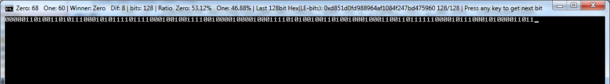
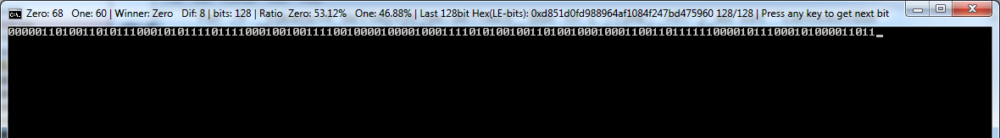

Playing with random ZEROs and ONEs
Posted: 08 May 2018 06:25
I was curios how much can we go random in batch by combining inaccurate timing which is inherent in human with accuracy and predictability of a computer.
So I started playing a little with keyboard and timer in batch.
So here it is

If the above image makes you carious enough then this is the code. Just don't press keys too quickly
So I started playing a little with keyboard and timer in batch.
So here it is

If the above image makes you carious enough then this is the code. Just don't press keys too quickly
Code: Select all
@echo off
setlocal EnableDelayedExpansion
mode con cols=145 lines=40
cls
set "TIME="
for /F "tokens=1,3 delims=0123456789" %%A in ("%TIME: =0%") do set "time.delims=%%A%%B"
set "HEX.Digits=0123456789abcdef"
set "Winner[0]=None"
set "Winner[1]=Zero"
set "Winner[2]=One"
set /a "hex4.val=hex4.bits=one=zero=bits=0"
title Press any key to get next bit
for /L %%A in () do (
pause>nul
rem ping -n 2 127.0.0.1>nul
for /F "tokens=4 delims=%time.delims%" %%A in ("!TIME: =0!") do set "centsec=%%A"
set /a "bit=!centsec:~1,1!&1, zero+=^!bit, one+=bit, bits+=1"
set /a "dif=zero-one, sign=((dif&0x80000000)>>31)&1, dif*=1-2*sign, Winner=(^!^!dif)*(sign+1)"
set /a "izr=(zero*100)/bits, fzr=((zero*100)%%bits)*100/bits"
set /a "or=10000-100*izr-fzr, ior=or/100, for=or%%100"
if /i !fzr! LEQ 9 set "fzr=0!fzr!
if /i !for! LEQ 9 set "for=0!for!
for %%i in (!Winner!) do set "Winner=!Winner[%%i]!"
set /a "hex128.bits=(bits-1)%%128"
if /i !hex128.bits! EQU 0 (
set "hex128=#"
) else if /i !hex4.bits! EQU 0 (
set "hex128=#!hex128!"
)
set /a "hex4.val+=bit<<hex4.bits, hex4.bits=(hex4.bits+1)%%4"
for %%i in (!hex4.val!) do set "hex128=!Hex.Digits:~%%i,1!!hex128:~1!"
set /a "rnd=hex4.val, hex4.val*=^!^!hex4.bits, hex128.bits+=1"
set /p "=!bit!"<nul
set "title="
set "title=!title!Zero: !zero! One: !one! | Winner: !Winner! Dif: !dif! | "
set "title=!title!bits: !bits! | Ratio Zero: !izr!.!fzr!%% One: !ior!.!for!%% | "
set "title=!title!Last 128bit Hex(LE-bits): 0x!hex128! !hex128.bits!/128 | "
set "title=!title!Press any key to get next bit"
title !title!
set /a "centsec=!centsec:~0,1!*10+!centsec:~1,1!"
set /a "kbd_delay=centsec*rnd"
rem for /L %%A in (1,1,!kbd_delay!) do pause<nul>nul
)